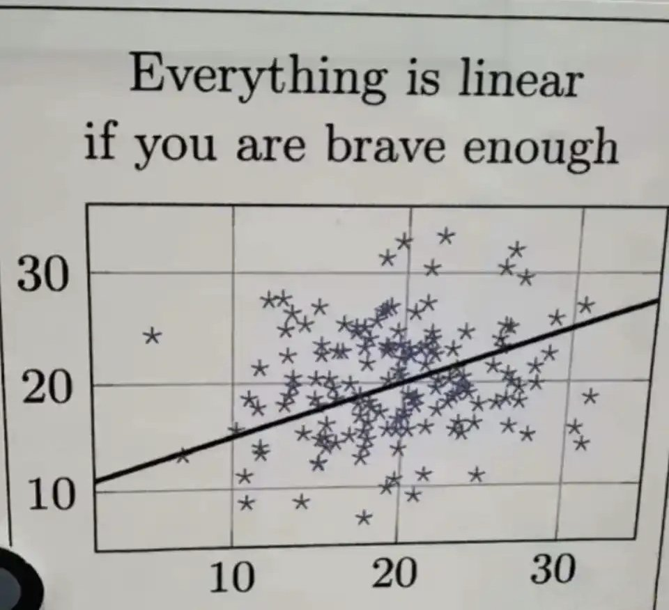
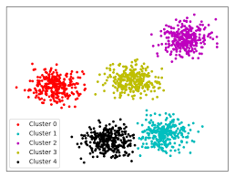
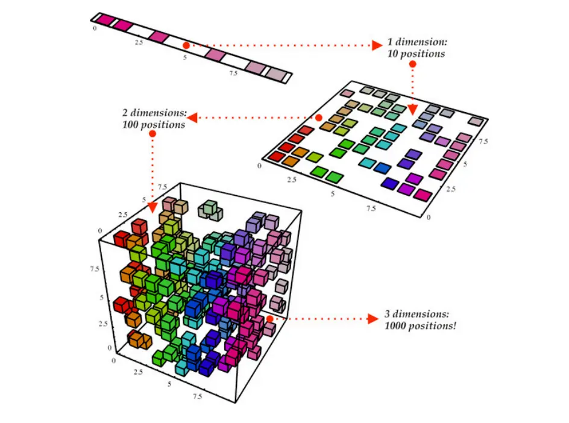

Machine Learning - Types of Machine Learning and Tasks
Back to Machine Learning guideline
Types of Machine Learning and Tasks
Machine learning can be categorized based on how models learn from data and whether the training data contains labels (target outputs). These categories are commonly referred to as learning paradigms. The most widely recognized machine learning types include: - Supervised Learning - Unsupervised Learning - Semi-Supervised Learning - Reinforcement Learning
Supervised Learning
Supervised learning is the most common machine learning paradigm. In this setting, the training dataset consists of input–output pairs, meaning each example contains both a feature vector (x) and a corresponding label (y). The objective of the model is to learn a mapping function \[f: X \rightarrow Y\] that can correctly predict the output for unseen inputs. Training typically involves minimizing a loss function that measures the difference between predicted values and true labels. Supervised learning is mainly used for two types of tasks:
Classification
Classification is the task of predicting discrete categories or class labels. The model learns to assign an input sample to one of several predefined classes. Classification is widely used in natural language processing, computer vision, medical diagnosis, and recommendation systems. Classification problems can further be divided into several types: - Binary Classification – two possible classes (e.g., fraud detection). - Multi-class Classification – more than two classes (e.g., digit recognition). - Multi-label Classification – an instance can belong to multiple classes simultaneously.
Common classification algorithms include: - Logistic Regression
- Support Vector Machines (SVM)
- Decision Trees
- Random Forest
- Neural Networks
Regression

Regression is the task of predicting continuous numerical values. Instead of assigning a category, the model estimates a real-valued output.
Regression models attempt to approximate a function that captures the relationship between input variables and a continuous target variable. Regression is commonly used in forecasting, financial analysis, and scientific modeling. Typical regression algorithms include: - Linear Regression
- Polynomial Regression
- Ridge / Lasso Regression
- Support Vector Regression
- Neural Networks
Unsupervised Learning
Unsupervised learning works with unlabeled data, meaning the dataset only contains input features without corresponding outputs:\[X = \{x_1, x_2, ..., x_n\}\]. The goal of unsupervised learning is to discover hidden structures, patterns, or relationships within the data. Instead of predicting labels, the model attempts to understand the underlying distribution of the dataset.
Typical applications include:
Clustering

Clustering is the task of grouping similar data points together so that samples within the same group are more similar to each other than to those in other groups. Clustering is widely used in market analysis, anomaly detection, and social network analysis.
Common clustering algorithms include: - K-Means
- Hierarchical Clustering
- DBSCAN
- Gaussian Mixture Models
Dimensionality Reduction

Dimensionality reduction aims to reduce the number of features in a dataset while preserving important information. High-dimensional datasets often suffer from the curse of dimensionality, making learning more difficult. Dimensionality reduction helps by: - Simplifying data representation
- Reducing noise
- Improving visualization
Common dimensionality reduction methods include: - Principal Component Analysis (PCA)
- t-SNE
- UMAP
- Autoencoders
These methods are often used for data visualization, feature extraction, and preprocessing for machine learning models.
Association Rule Learning
Association rule learning aims to discover relationships between variables in large datasets. A classic example is market basket analysis, where retailers analyze purchasing patterns. Example rule: If a customer buys bread → they are likely to buy butter. Association rules are usually expressed as: A → B, and evaluated using measures such as: - support - confidence - lift
Common algorithms include: - Apriori
- FP-Growth
This technique is commonly used in retail analytics and recommendation systems.
Semi-Supervised Learning
Semi-supervised learning combines a small amount of labeled data with a large amount of unlabeled data. In many real-world scenarios, obtaining raw data is easy while labeling data is expensive and time-consuming. Semi-supervised learning aims to leverage the abundant unlabeled data to improve model performance. The dataset can be expressed as:\[D = \{(x_1,y_1), ..., (x_l,y_l)\} \cup \{x_{l+1}, ..., x_n\}\], where only a small portion of the data contains labels. Common techniques include: - Self-training - Pseudo-labeling - Co-training - Graph-based methods
Semi-supervised learning is widely used in areas such as image recognition, speech processing, and natural language processing.
Reinforcement Learning
Reinforcement learning (RL) is a paradigm in which an agent learns to make decisions through interaction with an environment. Instead of receiving labeled examples, the agent receives reward signals that evaluate the quality of its actions. The learning process typically involves the following elements: - Agent – the learner or decision maker
- Environment – the system with which the agent interacts
- State ((s)) – the current situation
- Action ((a)) – the decision taken by the agent
- Reward ((r)) – feedback from the environment
The objective of reinforcement learning is to maximize the expected cumulative reward:\[\max E\left[\sum_{t=0}^{\infty} \gamma^t r_t\right]\]
Common reinforcement learning algorithms include: - Q-Learning - SARSA - Deep Q Networks (DQN) - Policy Gradient methods
Reinforcement learning has been successfully applied in areas such as game playing, robotics, recommendation systems, and autonomous control.